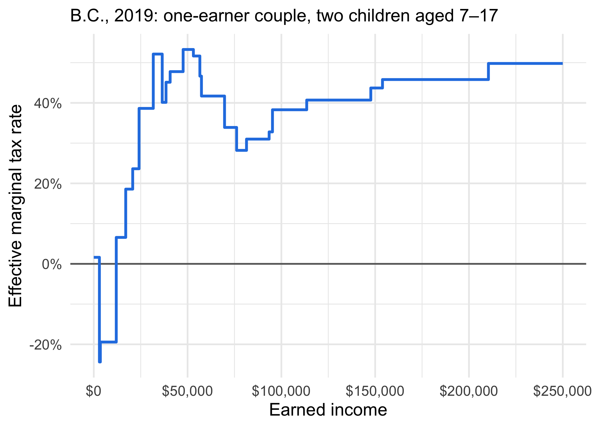

Main Deductions
- Child care: up to $8,000 per child under 7, $5,000 aged 7–16, $11,000 with a disability
- Claimed by the lower-earning parent, up to two-thirds of their earned income
- Union and professional dues, and employment expenses the employer doesn’t repay
- Moving expenses when the move is to earn income
- Carrying charges: interest on money borrowed to invest
- Spousal support: deducted by the payer, taxed to the recipient
- The payer is treated as passing the recipient’s income along
- Child support under orders made after April 1997 is neither deducted nor taxed